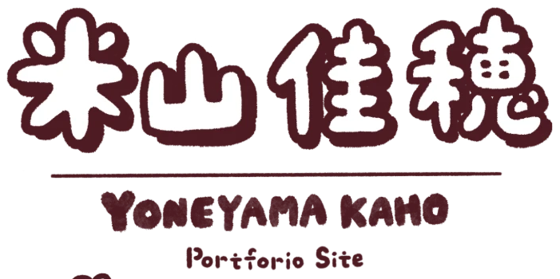
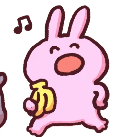
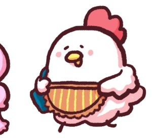
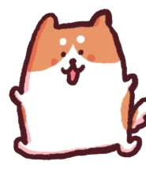

Expo Hostel & Cottage
情報設計HTML/CSS0→1
新しい長期滞在サービスのWebサイトを、企画から実装・公開まで一貫して担当。
CONCEPT B2 — Playful Pop（更新版：参考サイトの技法を反映）
※ロゴタイプとアバター3体（柴犬・うさぎ・鶏）はご本人の実素材に差し替え済みです。ヒーロー中央の丸い写真は「似顔絵イラスト」用の仮置き（現在はプロフィール写真）です
※ヘッダーの言語切り替えUIを追加しました。表示の切り替えのみで、翻訳コンテンツは未実装です

LANGUAGE / 言語
※現在はUIのみです。各言語の翻訳コンテンツは今後追加予定です。

★ コンテンツ企画・制作 / SNS・Web運用
日本語学習コンテンツのSNS運用、Web・グラフィック制作、海外ゲスト対応に携わってきました。相手の疑問や反応をもとに、伝える内容と見せ方を工夫し、制作から公開後の運用まで取り組んでいます。
💬 Featured Work
新しい長期滞在サービスのWebサイトを、企画から実装・公開まで一貫して担当。
既存サイトの改善・保守性向上と、継続的な更新運用を担当。

繰り返し寄せられる質問をもとに、案内資料を作成・整理。

